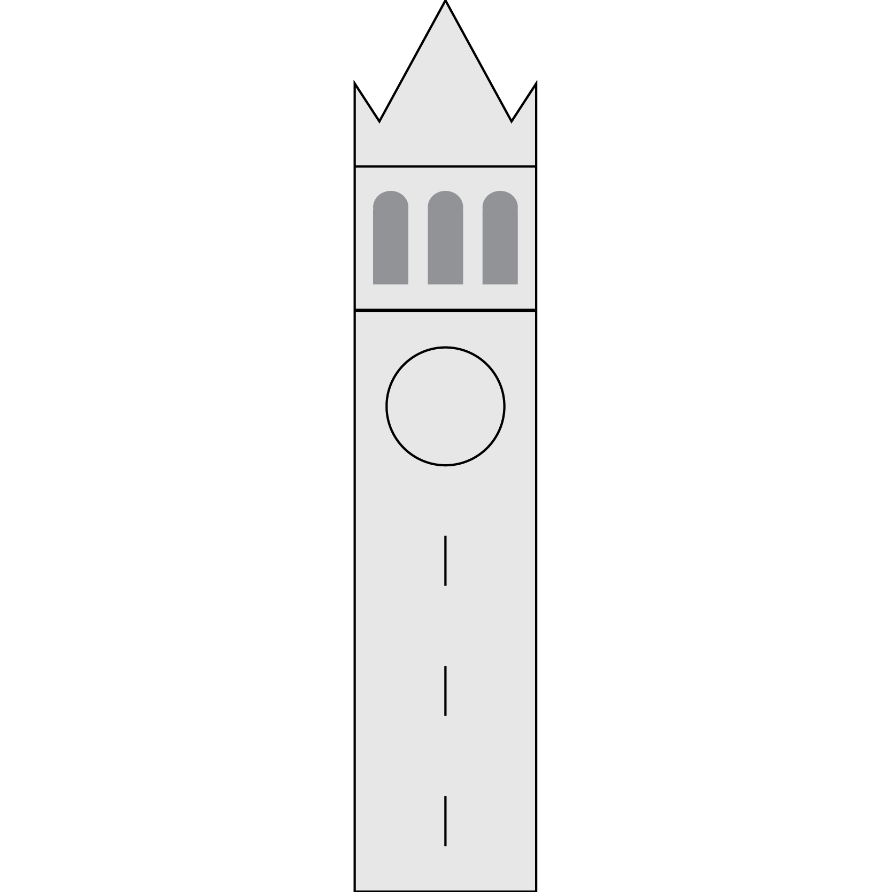
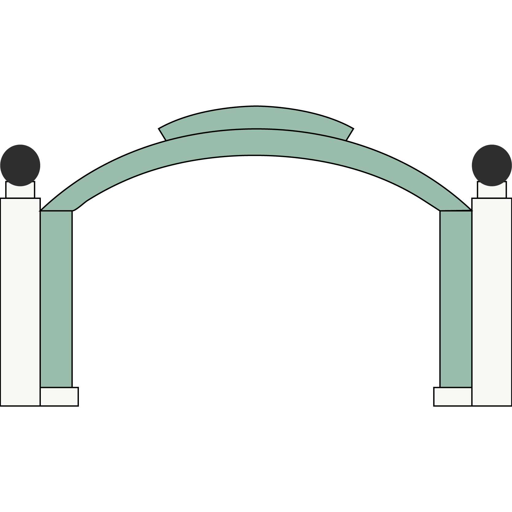

Berkeley, California


Berkeley (/ˈbɜːrkliː/ burk-lee) is a city on the east shore of San Francisco Bay in northern Alameda County, California. It is named after the 18th-century Anglo-Irish bishop and philosopher George Berkeley. It borders the cities of Oakland and Emeryville to the south and the city of Albany and unincorporated community of Kensington to the north. Its eastern border with Contra Costa County generally follows the ridge of the Berkeley Hills. The 2010 census recorded a population of 112,580.